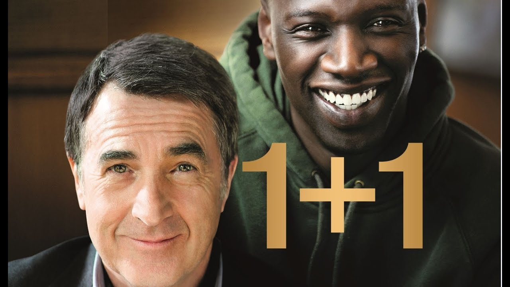

1+1
Описание фильма
Парализованный богатый аристократ Филипп, ставший инвалидом после того, как разбился на параплане, ищет себе помощника, который должен за ним ухаживать. Одного из кандидатов, чернокожего Дрисса, работа не интересует — ему нужен формальный письменный отказ, чтобы продолжать получать пособие по безработице. Но неожиданно именно его Филипп берёт на работу. Выходцу из Сенегала с криминальными наклонностями, любителю марихуаны, женщин и ритмичной музыки совершенно неизвестны хорошие манеры — он груб, бестактен и чужд всяких условностей. Но именно его естественность и непосредственность привлекли Филиппа. Страдая от заключения внутри собственного тела, жалости окружающих и внутреннего одиночества, Филипп хочет чего-то нового. В роскошный и чопорный дворец Филиппа Дрисс приносит частичку хаоса, а в жизнь Филиппа — дух приключений, спонтанности и лёгкости отношения к любым проблемам. Несмотря на сложную жизнь, Дрисс оказывается хорошим человеком. Между ним и Филиппом завязывается крепкая дружба. Однажды Дрисс узнаёт об Элеоноре, подруге Филиппа по переписке, которая не знает, что он парализован. В результате Дрисс уговаривает Филиппа позвонить Элеоноре. Та просит Филиппа прислать его фото. Дрисс находит в альбоме два фото Филиппа: на одном видно инвалидное кресло, на другом нет. Дрисс и Филипп сначала решают отправить первое фото, но потом Филипп пугается и просит домоуправляющую Ивонну поменять фотографии. Филипп отправляется на свидание в ресторан, но в последний момент передумывает и просит Ивонну срочно увезти его, разминувшись в дверях с не узнавшей его Элеонорой. Через некоторое время по семейным обстоятельствам Дрисс вынужден покинуть Филиппа, но тот уже не может без него обходиться. Его не устраивают французские помощники с хорошими манерами и безупречными рекомендациями. Жизнь начинает казаться ему пустой, но в этот момент Дрисс возвращается. Он увозит Филиппа на берег моря, и к аристократу вновь приходит радость жизни. Дрисс приводит Филиппа в кафе, где сообщает, что обедать с ним не будет: компанию Филиппу составит Элеонора. В финале ленты сообщается о дальнейшей судьбе реальных прототипов главных героев фильма. Филипп переехал в Марокко, снова женился и обзавёлся двумя дочерьми. Абдель Селлу (Дрисс) открыл собственный бизнес, тоже женился и имеет троих детей. И по сей день они с Филиппом остаются близкими друзьями.
Назад